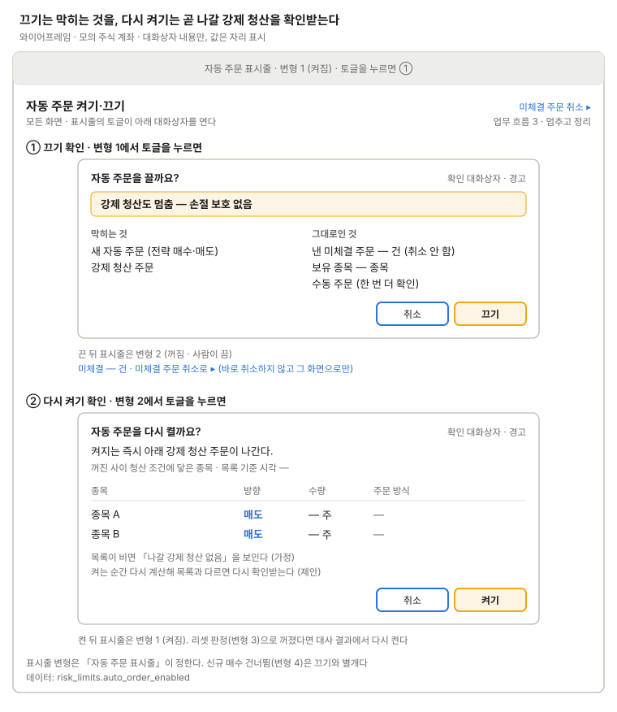

자동 주문 켜기·끄기
모든 화면 상단에 고정된 토글과 현재 상태.

표시줄은 컴포넌트가 맡고, 그림은 켜짐에서 여는 끄기 확인(막히는 것·그대로인 것)과 꺼짐에서 다시 켤 때(나갈 강제 청산 목록 확인) 대화상자 두 개를 그렸다.
끄기와 켜기 모두 확인 대화상자(경고)를 거친다. 리셋 판정의 멈춤은 자동 주문 끄기와 같고(변형 3), 신규 매수 건너뜀은 끄기와 별개다(변형 4, 결정 2026-10-16). 다시 켤 때 목록의 주문 방식은 자리만 두고, 청산 조건 종류는 strategy.md 11장(M5)에서 정한다.
쓰는 공통 UI
화면 틀 · 자동 주문 표시줄 (변형 1~5) · 확인 대화상자 (자동 주문 끄기·켜기)
상태
| 상태 | 보일 것 |
|---|---|
| 끄기 처리 중 | 토글 잠금, "끄는 중" |
| 끄기 실패 | 토글은 켜짐 그대로, "꺼지지 않았다" 오류와 다시 시도 |
| 켜기 처리 중 | 토글 잠금, "켜는 중" |
| 켜기 실패 | 꺼짐 그대로, 오류 문구 |
| 강제 청산 목록 계산 실패 | 켜기 버튼 막음(제안), 이유와 다시 계산 |
| 나갈 강제 청산 없음 | "나갈 강제 청산 없음" (가정) |
| 확인 사이 목록이 바뀜 | 켜는 순간 다시 계산해 다르면 다시 확인 (제안) |
| 실시간 끊김 | 표시줄 변형 5, 상태를 받은 시각 |
| 리셋 판정으로 꺼짐 | 표시줄 변형 3, 다시 켜기는 대사 결과의 확인 대화상자에서 |
화면 규칙
- 끄면: 강제 청산을 포함한 새 자동 주문이 나가지 않는다. 낸 주문과 보유 종목은 그대로다. 수동 주문은 한 번 더 확인받는다
- 꺼진 동안: "강제 청산도 멈춤 — 손절 보호 없음" 경고는 표시줄 변형 2가 모든 화면에 보인다
- 켤 때: 켜지는 즉시 나갈 강제 청산 주문 목록을 보여 주고 확인받는다(제안)
- 데이터:
risk_limits.auto_order_enabled